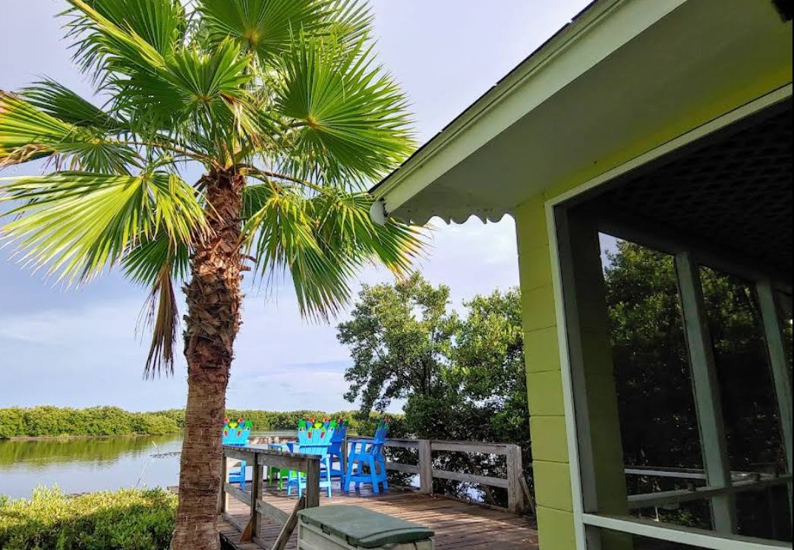
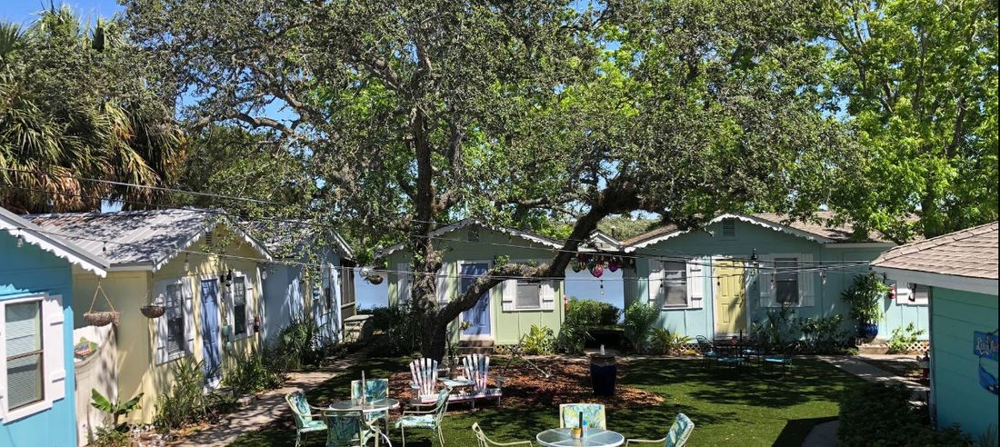
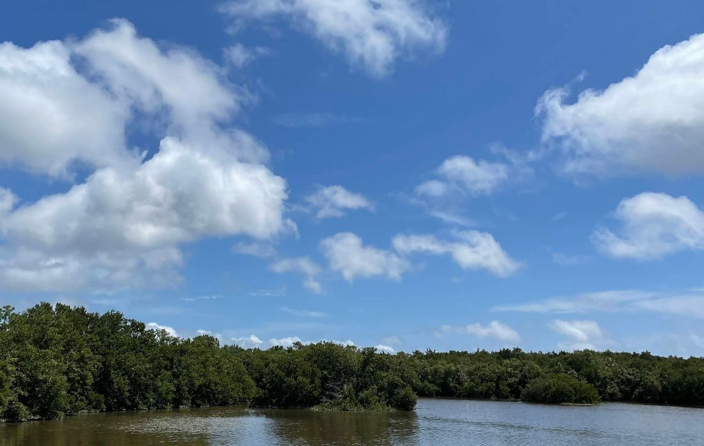
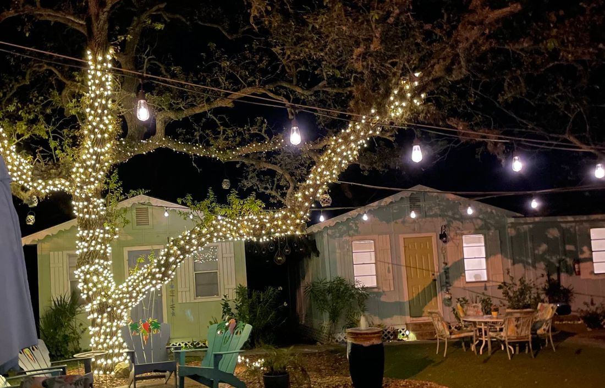
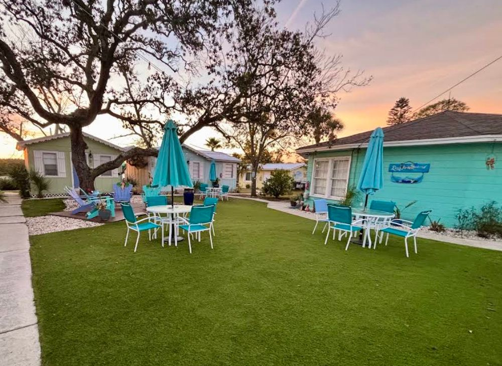

En el complejo
Pesca desde el muelle privado
Lance la caña al amanecer desde el muelle de Pirates Cove; el acceso depende de la marea.
Pirates Cove
Preparando el paisaje costero

Cedar Key · Costa del Golfo de Florida
Muelle privado, amaneceres sobre el agua y robles con musgo español. Explore el complejo en 3D y entre en cada cabaña antes de reservar.
Arrastre para girar · rueda o pellizco para acercar · toque una cabaña
Cabañas y tarifas
Filtre por huéspedes, vista o tipo de porche. Cada ficha incluye el modelo 3D por dentro y por fuera, distribución, amenidades y un estimador de precio.
Tarifas “desde”, por noche y más impuestos, según la web oficial; pueden variar por temporada, fechas y número de huéspedes. Confirme el precio final al reservar. Las cabañas se construyeron antes de las normas ADA y no son accesibles en silla de ruedas.
Plano del complejo
Las cabañas rodean un patio con robles centenarios, mesas y parrillas. Del lado este, la bahía y el muelle privado; al oeste, la carretera SR 24 que lleva al pueblo.
Seleccione una cabaña en el plano para ver sus datos.
Experiencias
Un pueblo de pescadores en un archipiélago de la Costa del Golfo, donde el plan es salir al agua temprano y ver caer la tarde desde el porche.

Lance la caña al amanecer desde el muelle de Pirates Cove; el acceso depende de la marea.

La bahía es hogar de pelícanos, garzas y águilas pescadoras. Lleve binoculares al porche.

El patio se ilumina al anochecer: parrillas, mesas y conversación junto a otros huéspedes.

Alquile en el lugar un carrito de golf o una bicicleta y recorra Cedar Key sin prisa.
Galería
Patios, jardines, terrazas sobre el agua y el interior de las cabañas. Toque la imagen para verla a pantalla completa.
Servicios
Todas las cabañas están a nivel del suelo y comparten jardines, parrillas y el muelle de pesca.
Limpias, cómodas, con precios razonables y una ubicación ideal para llegar al pueblo caminando, en bicicleta o en carrito de golf.
Reservar
Elija cabaña, fechas y huéspedes para obtener una estimación. La reserva final se confirma en nuestro sistema seguro de reservas en línea.
Entrada: 3:00 p. m.
Salida: 11:00 a. m.
Arrastre para girar · la vista gira sola cuando no la toca